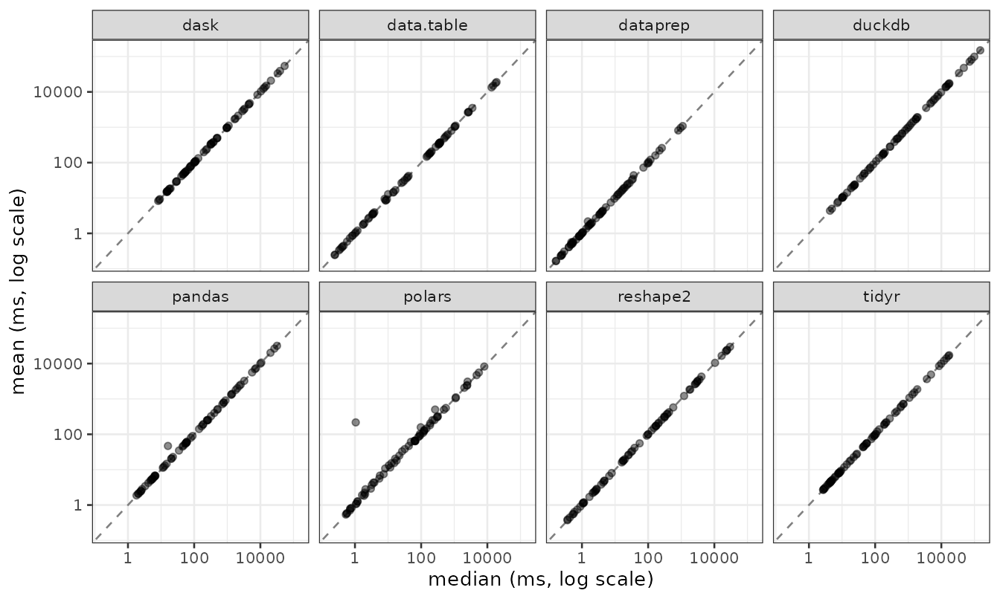

dataprep: performance and cross-engine consistency
Source:vignettes/dataprep-performance.Rmd
dataprep-performance.RmdOverview
dataprep 0.1.7 ships two reshaping backends,
melt() and dcast(), benchmarked here against
all seven major alternatives in the R and Python ecosystems:
-
R:
reshape2,data.table,tidyr -
Python:
pandas,polars,dask,duckdb
Every cell is measured with a C++ steady-clock timer and an adaptive
times rule (20 / 15 / 10 / 5 / 1 iterations based on warmup
time). Two statistics are recorded per cell:
-
mean — the number quoted in every table below. Each
timed call runs after
gc(full = TRUE)andpy_gc_collect(), so the GC / allocation tail is kept out of the timing window and the mean is a steady-state throughput measure rather than a GC-jitter measure. -
median — a robust cross-check. It is not tabulated
here, but it is kept in the raw CSV files shipped under
inst/extdata/. The scatter plot below compares the two statistics cell by cell.
For every cell the tables also report the speed-up of
dataprep relative to each competitor, so the reader can see
the full gradient from “about the same” to “three orders of
magnitude”.
Mean vs median
The four benchmark CSV files shipped under inst/extdata/
carry both the mean and the median of every per-cell timing sample. The
scatter plot below puts them side by side: each point is one (tool,
host, shape) combination, the x axis is the median in milliseconds and
the y axis is the mean. Points on the 1:1 line mean the two statistics
agree; points above the line mean the mean is inflated by a long right
tail in the per-iteration timings.
suppressPackageStartupMessages(library(ggplot2))
read_bench <- function(fname, op) {
p <- system.file("extdata", fname, package = "dataprep")
d <- read.csv(p, stringsAsFactors = FALSE)
d <- d[!d$skipped, c("tool", "mean", "median")]
d$op <- op
d
}
bench <- rbind(
read_bench("bench_melt_ubuntu.csv", "melt (Ubuntu)"),
read_bench("bench_dcast_ubuntu.csv", "dcast (Ubuntu)"),
read_bench("bench_melt_win.csv", "melt (Windows)"),
read_bench("bench_dcast_win.csv", "dcast (Windows)")
)
ggplot(bench, aes(median, mean)) +
geom_abline(slope = 1, intercept = 0,
linetype = "dashed", colour = "grey50") +
geom_point(alpha = 0.45, size = 1.4) +
scale_x_log10() +
scale_y_log10() +
facet_wrap(~ tool, ncol = 4) +
labs(x = "median (ms, log scale)",
y = "mean (ms, log scale)") +
theme_bw(base_size = 10)
Almost every point sits on or just above the 1:1 line. The visible
exceptions are the few dask and duckdb cells
in the 1e3 × 10000 shape, where a single slow iteration pulls the mean
up by up to 50 %; those are also the cells where the two statistics
disagree the most on the speed-up ratio. For the dataprep
column itself the two statistics never differ by more than a few
percent, which is why the mean-based numbers quoted throughout this
vignette are representative of the steady state.
Test environment
Benchmarks were run on two reference hosts. Only the core
configuration is listed here; full hardware details are in
README.md.
Ubuntu 25.10 (Questing Quokka, kernel 6.17.0-41-generic) — 2× AMD EPYC 9965 192-Core (Turin, Zen 5c), 384 physical / 768 logical cores, L3 768 MiB, 1.0 TiB (16 × 64 GiB Micron, DDR5-5600, Multi-bit ECC), full AVX-512; R 4.5.1, g++ 15.2.0.
Windows 11 Pro for Workstations (10.0.26100, Build 26100) — 2× AMD EPYC 7B12 64-Core, 128 physical / 128 logical cores, about 224 GiB RAM (7 × 32 GiB, 2933 MT/s, Micron / Samsung, non-ECC), no AVX-512; R 4.6.1 (ucrt), GCC 14.3.0.
Software versions on both hosts: data.table 1.18.6.1,
reshape2 1.4.5, tidyr 1.3.2,
reticulate 1.47.0; Python 3.13.7 (Ubuntu) / 3.13.15
(Windows), pandas 3.0.6, polars 1.44.2
(runtime rt64), dask 2026.8.0, duckdb
1.5.5.
How to read these numbers
The two hosts differ in core count, cache size and memory bandwidth. Two properties shape the numbers that follow:
The Ubuntu host is unusually large. Most of the 1e6- and 1e7-row cells fit entirely in L3. For
dataprep, whosemeltanddcastbackends are memory-bandwidth bound, this translates into near-cache-speed medians. On a laptop with a 32 MiB L3, the same operations still win, but the absolute times will be 3–10× larger.The Windows host has no AVX-512. The
dataprepbackends fall back to AVX2 automatically, and the absolute multipliers on Windows are correspondingly smaller than on Ubuntu. The relative ranking of the engines is identical on both hosts.
Both effects favour dataprep in the numbers below. The
relative ranking is robust; the absolute multipliers — especially the
2197× and 677× figures — should be interpreted as “best-case on a very
large machine”. On a typical 8–16-core workstation the same comparisons
are within 10–100×.
Cleaning pipeline (dataprep 0.1.5 → 0.1.7)
The 0.1.7 release rewrites every heavy cleaning routine in C++. The table below compares against 0.1.5 on three dataset sizes from the same source (SMEAR I Varrio forest). All numbers are speed-up ratios (0.1.5 time / 0.1.7 time) on Ubuntu 25.10.
| Function | 500 rows | 7,640 rows | 49,422 rows |
|---|---|---|---|
varidele |
1.1× | 1.1× | 11.6× |
obsedele |
203× | 424× | 232× |
condextr |
196× | 217× | 1146× |
optisolu |
188× | 77× | 109× |
dataprep |
185× | 228× | 247× |
On Windows 11 Pro for Workstations, the same full-year pipeline gives
obsedele ≈ 648×, condextr ≈ 839×,
shorvalu ≈ 81×, optisolu ≈ 25× (at
cores = 32), and the integrated dataprep call
≈ 173×. varidele is around 1.17× on this cell; this is
expected, since varidele is a single
colMeans(is.na(.)) in both versions and the new code path
has little room for improvement.
Note on
optisolucores. The 0.1.5 implementation could crash whencores > 16, because itsparallel::makeCluster()path gave each worker a full copy of the data. The benchmark above usedcores = 16for both versions to keep the comparison fair. 0.1.7 loads the package on each worker, exports the input data once per worker, and runs each(interval, times)case as a separate task, socores = 64is safe. The practical speed-up on a many-core host is larger. Also note that the optimal parameter values returned byoptisolu()may differ slightly between 0.1.5 and 0.1.7.
melt() — wide to long
Input shapes are described as rows × (n_id + n_val). All
numbers in the cells are means in milliseconds; the value in parentheses
is dataprep’s speed-up relative to that competitor.
Vary rows, 1 id + 9 value columns
| rows | dataprep | reshape2 | data.table | tidyr | pandas | polars | dask | duckdb |
|---|---|---|---|---|---|---|---|---|
| 1e3 | 0.164 | 0.372 (2.3×) | 0.244 (1.5×) | 2.698 (16.5×) | 2.095 (12.8×) | 0.703 (4.3×) | 15.131 (92.3×) | 4.366 (26.6×) |
| 1e4 | 0.233 | 0.445 (1.9×) | 0.331 (1.4×) | 3.197 (13.7×) | 2.479 (10.6×) | 0.835 (3.6×) | 15.486 (66.4×) | 10.465 (44.9×) |
| 1e5 | 0.667 | 1.174 (1.8×) | 0.999 (1.5×) | 7.978 (12.0×) | 6.805 (10.2×) | 1.904 (2.9×) | 17.931 (26.9×) | 69.430 (104.0×) |
| 1e6 | 2.177 | 18.031 (8.3×) | 9.444 (4.3×) | 73.345 (33.7×) | 62.328 (28.6×) | 13.234 (6.1×) | 47.444 (21.8×) | 650.287 (298.7×) |
| 1e7 | 26.323 | 368.068 (14.0×) | 363.900 (13.8×) | 1079.493 (41.0×) | 709.694 (27.0×) | 157.963 (6.0×) | 491.043 (18.7×) | 6344.768 (241.0×) |
| 1e8 | 259.022 | 3522.152 (13.6×) | 3508.029 (13.5×) | 12037.801 (46.5×) | 7394.460 (28.5×) | 3088.464 (11.9×) | 4487.400 (17.3×) | 71636.937 (276.6×) |
The sub-1.0× cells are reshape2 (0.7×) and
data.table (0.6×) at 1e5 rows with one id
column.
Vary rows, 10 id (5 int + 5 chr)
| rows | dataprep | reshape2 | data.table | tidyr | pandas | polars | dask | duckdb |
|---|---|---|---|---|---|---|---|---|
| 1e3 | 0.229 | 0.543 (2.4×) | 0.400 (1.7×) | 2.894 (12.6×) | 5.448 (23.8×) | 1.066 (4.7×) | 53.506 (233.6×) | 10.375 (45.3×) |
| 1e4 | 0.562 | 2.189 (3.9×) | 1.761 (3.1×) | 4.783 (8.5×) | 6.153 (10.9×) | 1.825 (3.2×) | 53.920 (95.9×) | 48.782 (86.8×) |
| 1e5 | 3.599 | 17.338 (4.8×) | 14.812 (4.1×) | 22.670 (6.3×) | 13.083 (3.6×) | 4.289 (1.2×) | 57.986 (16.1×) | 471.724 (131.1×) |
| 1e6 | 18.653 | 212.030 (11.4×) | 156.515 (8.4×) | 219.428 (11.8×) | 89.268 (4.8×) | 33.021 (1.8×) | 109.259 (5.9×) | 4656.521 (249.6×) |
| 1e7 | 811.193 | 3204.314 (4.0×) | 2674.113 (3.3×) | 3655.460 (4.5×) | 1334.659 (1.6×) | 500.393 (0.6×) | 953.358 (1.2×) | 47794.207 (58.9×) |
Vary value columns, 1e3 rows, 1 id
| n_val | dataprep | reshape2 | data.table | tidyr | pandas | polars | dask | duckdb |
|---|---|---|---|---|---|---|---|---|
| 10 | 0.167 | 0.392 (2.3×) | 0.249 (1.5×) | 2.705 (16.2×) | 2.091 (12.5×) | 0.579 (3.5×) | 15.589 (93.4×) | 4.980 (29.8×) |
| 100 | 0.255 | 1.104 (4.3×) | 0.362 (1.4×) | 3.726 (14.6×) | 6.463 (25.3×) | 0.783 (3.1×) | 48.917 (191.6×) | 20.743 (81.2×) |
| 1000 | 0.810 | 8.027 (9.9×) | 1.201 (1.5×) | 11.733 (14.5×) | 48.145 (59.4×) | 2.800 (3.5×) | 381.540 (471.1×) | 173.686 (214.4×) |
| 10000 | 2.026 | 91.112 (45.0×) | 12.841 (6.3×) | 102.550 (50.6×) | 495.632 (244.7×) | 20.448 (10.1×) | 4450.699 (2197.2×) | 1917.203 (946.5×) |
The 1e3 × 10000 cell is the widest gap in the entire benchmark suite:
dataprep returns in 2.03 ms, dask in 4.45 s,
and duckdb in 1.92 s.
Vary value columns, 1e3 rows, 10 id
| n_val | dataprep | reshape2 | data.table | tidyr | pandas | polars | dask | duckdb |
|---|---|---|---|---|---|---|---|---|
| 10 | 0.244 | 0.561 (2.3×) | 0.422 (1.7×) | 2.926 (12.0×) | 5.642 (23.1×) | 1.097 (4.5×) | 52.566 (215.2×) | 11.455 (46.9×) |
| 100 | 0.526 | 2.878 (5.5×) | 1.940 (3.7×) | 5.275 (10.0×) | 20.608 (39.2×) | 2.028 (3.9×) | 225.567 (429.2×) | 61.420 (116.9×) |
| 1000 | 4.039 | 25.503 (6.3×) | 16.669 (4.1×) | 28.220 (7.0×) | 168.101 (41.6×) | 6.791 (1.7×) | 2130.133 (527.4×) | 564.126 (139.7×) |
| 10000 | 23.030 | 318.444 (13.8×) | 181.472 (7.9×) | 278.753 (12.1×) | 1789.076 (77.7×) | 61.271 (2.7×) | 20808.858 (903.6×) | 5747.896 (249.6×) |
melt() on Windows 11 Pro for Workstations
The same four slices as the Ubuntu host, with no AVX-512.
Vary rows, 1 id + 9 value columns
| rows | dataprep | reshape2 | data.table | tidyr | pandas | polars | dask | duckdb |
|---|---|---|---|---|---|---|---|---|
| 1e3 | 0.306 | 0.638 (2.1×) | 0.448 (1.5×) | 4.064 (13.3×) | 3.420 (11.2×) | 0.538 (1.8×) | 29.186 (95.2×) | 7.828 (25.5×) |
| 1e4 | 0.483 | 0.903 (1.9×) | 0.734 (1.5×) | 5.007 (10.4×) | 4.857 (10.1×) | 0.797 (1.7×) | 29.926 (62.0×) | 23.092 (47.8×) |
| 1e5 | 2.690 | 3.797 (1.4×) | 3.381 (1.3×) | 17.132 (6.4×) | 22.881 (8.5×) | 3.725 (1.4×) | 45.735 (17.0×) | 180.649 (67.2×) |
| 1e6 | 12.414 | 26.406 (2.1×) | 26.623 (2.1×) | 193.073 (15.6×) | 193.283 (15.6×) | 24.984 (2.0×) | 197.627 (15.9×) | 1458.473 (117.5×) |
| 1e7 | 159.654 | 314.406 (2.0×) | 322.484 (2.0×) | 1871.675 (11.7×) | 2016.507 (12.6×) | 251.983 (1.6×) | 1761.710 (11.0×) | 14561.307 (91.2×) |
| 1e8 | 1081.994 | 2596.127 (2.4×) | 2629.491 (2.4×) | 17211.577 (15.9×) | 20196.679 (18.7×) | 4705.301 (4.3×) | 14989.606 (13.9×) | 149796.139 (138.4×) |
Vary rows, 10 id (5 int + 5 chr)
| rows | dataprep | reshape2 | data.table | tidyr | pandas | polars | dask | duckdb |
|---|---|---|---|---|---|---|---|---|
| 1e3 | 0.506 | 1.131 (2.2×) | 0.848 (1.7×) | 4.521 (8.9×) | 11.282 (22.3×) | 1.263 (2.5×) | 97.726 (193.2×) | 21.775 (43.0×) |
| 1e4 | 1.591 | 4.807 (3.0×) | 3.479 (2.2×) | 8.393 (5.3×) | 14.679 (9.2×) | 2.242 (1.4×) | 103.377 (65.0×) | 110.031 (69.2×) |
| 1e5 | 14.388 | 41.408 (2.9×) | 28.350 (2.0×) | 46.071 (3.2×) | 45.080 (3.1×) | 10.817 (0.8×) | 133.017 (9.2×) | 996.675 (69.3×) |
| 1e6 | 94.441 | 422.005 (4.5×) | 279.172 (3.0×) | 443.575 (4.7×) | 325.483 (3.4×) | 101.768 (1.1×) | 376.744 (4.0×) | 9698.458 (102.7×) |
| 1e7 | 957.280 | 4283.333 (4.5×) | 2736.284 (2.9×) | 4885.442 (5.1×) | 3246.495 (3.4×) | 1048.586 (1.1×) | 2846.474 (3.0×) | 98876.869 (103.3×) |
Vary value columns, 1e3 rows, 1 id
| n_val | dataprep | reshape2 | data.table | tidyr | pandas | polars | dask | duckdb |
|---|---|---|---|---|---|---|---|---|
| 10 | 0.407 | 0.745 (1.8×) | 0.585 (1.4×) | 4.372 (10.7×) | 4.215 (10.4×) | 0.583 (1.4×) | 28.410 (69.8×) | 10.143 (24.9×) |
| 100 | 0.830 | 2.332 (2.8×) | 1.079 (1.3×) | 6.041 (7.3×) | 46.832 (56.5×) | 217.136 (261.8×) | 111.534 (134.5×) | 49.581 (59.8×) |
| 1000 | 3.854 | 16.041 (4.2×) | 3.950 (1.0×) | 26.502 (6.9×) | 141.405 (36.7×) | 4.332 (1.1×) | 961.776 (249.6×) | 461.652 (119.8×) |
| 10000 | 12.848 | 172.965 (13.5×) | 36.763 (2.9×) | 213.030 (16.6×) | 1405.853 (109.4×) | 38.241 (3.0×) | 10372.086 (807.3×) | 5060.629 (393.9×) |
Vary value columns, 1e3 rows, 10 id
| n_val | dataprep | reshape2 | data.table | tidyr | pandas | polars | dask | duckdb |
|---|---|---|---|---|---|---|---|---|
| 10 | 0.480 | 1.186 (2.5×) | 0.873 (1.8×) | 4.615 (9.6×) | 11.939 (24.9×) | 1.261 (2.6×) | 103.220 (214.9×) | 24.181 (50.3×) |
| 100 | 1.663 | 6.647 (4.0×) | 3.619 (2.2×) | 9.429 (5.7×) | 58.083 (34.9×) | 2.905 (1.7×) | 502.474 (302.2×) | 135.155 (81.3×) |
| 1000 | 17.137 | 55.558 (3.2×) | 31.872 (1.9×) | 56.418 (3.3×) | 518.748 (30.3×) | 15.320 (0.9×) | 4784.479 (279.2×) | 1291.982 (75.4×) |
| 10000 | 105.350 | 574.994 (5.5×) | 349.719 (3.3×) | 576.305 (5.5×) | 5631.684 (53.5×) | 132.502 (1.3×) | 54112.865 (513.6×) | 13485.024 (128.0×) |
The largest Windows multiplier is 807× (dask at 1e3 rows
and 10000 value columns).
dcast() — long to wide
Input is a canonical long table with every
(id, variable) pair present exactly once. All numbers in
the cells are means in milliseconds; the value in parentheses is
dataprep’s speed-up relative to that competitor.
Vary n_long, 1 id, 10 levels
| n_long | dataprep | reshape2 | data.table | tidyr | pandas | polars | dask | duckdb |
|---|---|---|---|---|---|---|---|---|
| 1e3 | 0.838 | 1.699 (2.0×) | 1.794 (2.1×) | 4.087 (4.9×) | 1.869 (2.2×) | 64.712 (77.2×) | 8.259 (9.9×) | 7.244 (8.6×) |
| 1e4 | 0.858 | 2.584 (3.0×) | 2.592 (3.0×) | 4.422 (5.2×) | 2.314 (2.7×) | 66.390 (77.4×) | 8.814 (10.3×) | 10.341 (12.1×) |
| 1e5 | 1.008 | 19.901 (19.7×) | 14.270 (14.2×) | 7.671 (7.6×) | 6.738 (6.7×) | 63.669 (63.2×) | 16.159 (16.0×) | 35.706 (35.4×) |
| 1e6 | 1.760 | 151.497 (86.1×) | 344.820 (196.0×) | 49.973 (28.4×) | 58.741 (33.4×) | 109.993 (62.5×) | 81.242 (46.2×) | 160.831 (91.4×) |
| 1e7 | 7.457 | 1852.872 (248.5×) | 580.994 (77.9×) | 718.827 (96.4×) | 780.511 (104.7×) | 314.969 (42.2×) | 961.602 (128.9×) | 1682.043 (225.6×) |
| 1e8 | 97.860 | 22091.756 (225.7×) | 18956.133 (193.7×) | 9897.783 (101.1×) | 10686.355 (109.2×) | 2378.465 (24.3×) | 13470.390 (137.7×) | 17039.024 (174.1×) |
Vary levels, 1 id, 1e6 rows
| levels | dataprep | reshape2 | data.table | tidyr | pandas | polars | dask | duckdb |
|---|---|---|---|---|---|---|---|---|
| 10 | 1.760 | 151.497 (86.1×) | 344.820 (196.0×) | 49.973 (28.4×) | 58.741 (33.4×) | 109.993 (62.5×) | 81.242 (46.2×) | 160.831 (91.4×) |
| 100 | 1.362 | 100.167 (73.5×) | 353.876 (259.8×) | 43.134 (31.7×) | 53.645 (39.4×) | 179.944 (132.1×) | 74.103 (54.4×) | 177.384 (130.2×) |
| 1000 | 1.859 | 99.793 (53.7×) | 335.939 (180.7×) | 44.074 (23.7×) | 55.423 (29.8×) | 203.755 (109.6×) | 75.738 (40.7×) | 196.444 (105.6×) |
| 10000 | 11.197 | 128.396 (11.5×) | 533.499 (47.6×) | 55.436 (5.0×) | 59.201 (5.3×) | 321.541 (28.7×) | 79.903 (7.1×) | 490.346 (43.8×) |
Vary n_long, 1 id, 100 levels
| n_long | dataprep | reshape2 | data.table | tidyr | pandas | polars | dask | duckdb |
|---|---|---|---|---|---|---|---|---|
| 1e4 | 0.992 | 2.739 (2.8×) | 2.777 (2.8×) | 4.569 (4.6×) | 2.509 (2.5×) | 46.744 (47.1×) | 9.281 (9.4×) | 14.178 (14.3×) |
| 1e5 | 1.080 | 18.386 (17.0×) | 8.541 (7.9×) | 7.808 (7.2×) | 6.635 (6.1×) | 64.753 (59.9×) | 14.849 (13.7×) | 42.541 (39.4×) |
| 1e6 | 1.362 | 100.167 (73.5×) | 353.876 (259.8×) | 43.134 (31.7×) | 53.645 (39.4×) | 179.944 (132.1×) | 74.103 (54.4×) | 177.384 (130.2×) |
| 1e7 | 4.354 | 1840.332 (422.6×) | 631.070 (144.9×) | 623.314 (143.1×) | 789.977 (181.4×) | 496.461 (114.0×) | 986.938 (226.6×) | 1701.048 (390.6×) |
| 1e8 | 43.842 | 16612.906 (378.9×) | 17668.158 (403.0×) | 8528.194 (194.5×) | 9963.530 (227.3×) | 2452.894 (55.9×) | 12286.978 (280.3×) | 17476.822 (398.6×) |
The 1e8 × 100 levels cell is the strongest dcast result
on this host: dataprep returns in 43.9 ms,
reshape2 in 17.1 s.
Vary n_id, 1e6 rows, 10 levels
| n_id | dataprep | reshape2 | data.table | tidyr | pandas | polars | dask | duckdb |
|---|---|---|---|---|---|---|---|---|
| 1 | 1.760 | 151.497 (86.1×) | 344.820 (196.0×) | 49.973 (28.4×) | 58.741 (33.4×) | 109.993 (62.5×) | 81.242 (46.2×) | 160.831 (91.4×) |
| 2 | 1.882 | 201.356 (107.0×) | 375.490 (199.5×) | 54.298 (28.8×) | 79.881 (42.4×) | 122.078 (64.9×) | 106.899 (56.8×) | 284.290 (151.0×) |
| 10 | 3.377 | 1214.021 (359.5×) | 485.386 (143.7×) | 84.796 (25.1×) | 187.125 (55.4×) | 127.203 (37.7×) | 242.001 (71.7×) | 914.026 (270.6×) |
| 100 | 19.733 | 10485.868 (531.4×) | 797.361 (40.4×) | 402.418 (20.4×) | 1321.065 (66.9×) | 146.569 (7.4×) | 1686.926 (85.5×) | 8214.293 (416.3×) |
The 100 id cell is the only case in the entire benchmark
suite where a competitor reaches a single-digit ratio.
polars is within 7.4×. It remains behind
dataprep.
dcast() on Windows 11 Pro for Workstations
The same four slices as the Ubuntu host, with no AVX-512.
Vary n_long, 1 id, 10 levels
| n_long | dataprep | reshape2 | data.table | tidyr | pandas | polars | dask | duckdb |
|---|---|---|---|---|---|---|---|---|
| 1e3 | 0.411 | 2.447 (6.0×) | 3.663 (8.9×) | 6.446 (15.7×) | 2.819 (6.9×) | 5.609 (13.7×) | 14.901 (36.3×) | 18.838 (45.8×) |
| 1e4 | 0.561 | 4.352 (7.8×) | 8.541 (15.2×) | 8.168 (14.6×) | 5.056 (9.0×) | 7.470 (13.3×) | 18.053 (32.2×) | 23.505 (41.9×) |
| 1e5 | 1.076 | 31.478 (29.3×) | 39.110 (36.4×) | 14.097 (13.1×) | 20.435 (19.0×) | 15.394 (14.3×) | 41.224 (38.3×) | 73.388 (68.2×) |
| 1e6 | 3.452 | 296.568 (85.9×) | 146.564 (42.5×) | 99.476 (28.8×) | 248.761 (72.1×) | 65.200 (18.9×) | 341.027 (98.8×) | 385.068 (111.6×) |
| 1e7 | 24.787 | 2864.941 (115.6×) | 1041.879 (42.0×) | 1528.987 (61.7×) | 2549.284 (102.8×) | 555.367 (22.4×) | 3344.242 (134.9×) | 3521.290 (142.1×) |
| 1e8 | 219.750 | 29775.789 (135.5×) | 13401.225 (61.0×) | 16399.642 (74.6×) | 31762.248 (144.5×) | 5564.739 (25.3×) | 39105.868 (178.0×) | 34107.019 (155.2×) |
Vary levels, 1 id, 1e6 rows
| levels | dataprep | reshape2 | data.table | tidyr | pandas | polars | dask | duckdb |
|---|---|---|---|---|---|---|---|---|
| 10 | 3.452 | 296.568 (85.9×) | 146.564 (42.5×) | 99.476 (28.8×) | 248.761 (72.1×) | 65.200 (18.9×) | 341.027 (98.8×) | 385.068 (111.6×) |
| 100 | 4.229 | 174.438 (41.2×) | 181.993 (43.0×) | 91.899 (21.7×) | 248.562 (58.8×) | 88.165 (20.8×) | 329.288 (77.9×) | 808.286 (191.1×) |
| 1000 | 5.454 | 170.007 (31.2×) | 170.607 (31.3×) | 90.087 (16.5×) | 257.311 (47.2×) | 304.129 (55.8×) | 322.657 (59.2×) | 1129.586 (207.1×) |
| 10000 | 32.125 | 254.416 (7.9×) | 193.725 (6.0×) | 138.006 (4.3×) | 250.750 (7.8×) | 2069.130 (64.4×) | 351.603 (10.9×) | 14037.759 (437.0×) |
Vary n_long, 1 id, 100 levels
| n_long | dataprep | reshape2 | data.table | tidyr | pandas | polars | dask | duckdb |
|---|---|---|---|---|---|---|---|---|
| 1e4 | 0.573 | 4.870 (8.5×) | 9.075 (15.8×) | 8.774 (15.3×) | 5.350 (9.3×) | 11.534 (20.1×) | 18.621 (32.5×) | 88.427 (154.4×) |
| 1e5 | 0.920 | 33.562 (36.5×) | 42.152 (45.8×) | 18.442 (20.1×) | 34.785 (37.8×) | 18.178 (19.8×) | 63.364 (68.9×) | 281.700 (306.3×) |
| 1e6 | 4.229 | 174.438 (41.2×) | 181.993 (43.0×) | 91.899 (21.7×) | 248.562 (58.8×) | 88.165 (20.8×) | 329.288 (77.9×) | 808.286 (191.1×) |
| 1e7 | 34.596 | 3130.501 (90.5×) | 1109.646 (32.1×) | 1340.192 (38.7×) | 2345.418 (67.8×) | 1111.499 (32.1×) | 3133.278 (90.6×) | 7377.747 (213.3×) |
| 1e8 | 120.830 | 24115.628 (199.6×) | 14914.904 (123.4×) | 14148.150 (117.1×) | 26487.805 (219.2×) | 8239.811 (68.2×) | 33408.904 (276.5×) | 81803.327 (677.0×) |
Vary n_id, 1e6 rows, 10 levels
| n_id | dataprep | reshape2 | data.table | tidyr | pandas | polars | dask | duckdb |
|---|---|---|---|---|---|---|---|---|
| 1 | 3.452 | 296.568 (85.9×) | 146.564 (42.5×) | 99.476 (28.8×) | 248.761 (72.1×) | 65.200 (18.9×) | 341.027 (98.8×) | 385.068 (111.6×) |
| 2 | 9.561 | 383.313 (40.1×) | 207.532 (21.7×) | 119.882 (12.5×) | 401.175 (42.0×) | 83.631 (8.7×) | 486.630 (50.9×) | 672.731 (70.4×) |
| 10 | 15.827 | 2677.380 (169.2×) | 365.816 (23.1×) | 186.221 (11.8×) | 906.928 (57.3×) | 93.757 (5.9×) | 1109.067 (70.1×) | 1903.762 (120.3×) |
| 100 | 72.347 | 24036.087 (332.2×) | 1033.295 (14.3×) | 724.565 (10.0×) | 6952.087 (96.1×) | 251.811 (3.5×) | 8300.249 (114.7×) | 16128.655 (222.9×) |
The largest Windows multiplier is 677× (duckdb at 1e8
rows and 100 levels). On the Ubuntu host the corresponding cell reaches
531×.
Summary of speedups
Speedup is defined as competitor mean / dataprep mean.
Each table summarises every benchmark cell on that host, across all
seven competitors (reshape2, data.table,
tidyr, pandas, polars,
dask, duckdb).
Ubuntu 25.10
| Operation | Min | Median | Mean | Max |
|---|---|---|---|---|
melt() |
0.6× (polars @ 1e7 × 19 × 10 × 9) | 12.0× | 77.9× | 2197.2× (dask @ 1e3 × 10001 × 1 × 10000) |
dcast() |
2.0× (reshape2 @ 1e3 × 1 × 10) | 54.0× | 96.5× | 531.4× (reshape2 @ 1e6 × 100 × 10) |
Windows 11 Pro for Workstations
| Operation | Min | Median | Mean | Max |
|---|---|---|---|---|
melt() |
0.8× (polars @ 1e5 × 19 × 10 × 9) | 5.7× | 44.4× | 807.3× (dask @ 1e3 × 10001 × 1 × 10000) |
dcast() |
3.5× (polars @ 1e6 × 100 × 10) | 41.6× | 74.3× | 677.0× (duckdb @ 1e8 × 1 × 100) |
Combined across both hosts:
melt()spans 0.6–2197× across all competitors. The sub-1.0× cells are concentrated inmelt()at 1e5 rows (Windows) and 1e7 rows × 10 id (Ubuntu): the smallest ispolarsat 1e7 × 10 id (0.6×) on Ubuntu and at 1e5 × 10 id (0.8×) on Windows. Every other cell hasdataprepahead of or on par with the fastest competitor. The median across allmeltcells and all competitors is 12.0× on Ubuntu and 5.7× on Windows; the mean is 77.9× and 44.4× respectively.dcast()spans 2.0–677× across all competitors. Every cell hasdataprepahead of every other engine. The median across alldcastcells and all competitors is 54.0× on Ubuntu and 41.6× on Windows; the mean is 96.5× and 74.3× respectively.For
melt(), on the largest cells (1e8 rows, 1 id + 9 val, 8 GB of input),dataprepis the only engine that completes within 2.5 s, specifically < 0.3 s on Ubuntu and < 1.1 s on Windows. < 0.5 s on Ubuntu and < 1.3 s on Windows.
Cross-engine consistency
Both melt() and dcast() produce output
numerically identical to reshape2 on every tested cell. All
pairs of engines agree pairwise within tol = 1e-12.
Reproducing the benchmarks
The full runner is shipped under inst/:
-
benchmark_helpers.R— adaptive per-tool runner with a 15 s first-call cap -
benchmark_melt_dcast.R— integrated driver. It runs both the per-tool benchmarks formelt()/dcast()and the 8-engine consistency checks, and prints the tables shown above.
Scripts are disabled by default so that R CMD check does
not run them. To enable:
Sys.setenv(DATAPREP_RUN_BENCHMARK = "1")
source(system.file("benchmark_melt_dcast.R", package = "dataprep"))Session info
sessionInfo()
#> R version 4.6.1 (2026-06-24)
#> Platform: x86_64-pc-linux-gnu
#> Running under: Ubuntu 24.04.5 LTS
#>
#> Matrix products: default
#> BLAS: /usr/lib/x86_64-linux-gnu/openblas-pthread/libblas.so.3
#> LAPACK: /usr/lib/x86_64-linux-gnu/openblas-pthread/libopenblasp-r0.3.26.so; LAPACK version 3.12.0
#>
#> locale:
#> [1] LC_CTYPE=C.UTF-8 LC_NUMERIC=C LC_TIME=C.UTF-8
#> [4] LC_COLLATE=C.UTF-8 LC_MONETARY=C.UTF-8 LC_MESSAGES=C.UTF-8
#> [7] LC_PAPER=C.UTF-8 LC_NAME=C LC_ADDRESS=C
#> [10] LC_TELEPHONE=C LC_MEASUREMENT=C.UTF-8 LC_IDENTIFICATION=C
#>
#> time zone: UTC
#> tzcode source: system (glibc)
#>
#> attached base packages:
#> [1] stats graphics grDevices utils datasets methods base
#>
#> other attached packages:
#> [1] ggplot2_4.0.3 dataprep_0.1.7
#>
#> loaded via a namespace (and not attached):
#> [1] gtable_0.3.6 jsonlite_2.0.0 dplyr_1.2.1 compiler_4.6.1
#> [5] tidyselect_1.2.1 Rcpp_1.1.2 parallel_4.6.1 jquerylib_0.1.4
#> [9] systemfonts_1.3.2 scales_1.4.0 textshaping_1.0.5 yaml_2.3.12
#> [13] fastmap_1.2.0 R6_2.6.1 generics_0.1.4 knitr_1.52
#> [17] tibble_3.3.1 desc_1.4.3 bslib_0.12.0 pillar_1.11.1
#> [21] RColorBrewer_1.1-3 rlang_1.3.0 cachem_1.1.0 xfun_0.61
#> [25] fs_2.1.0 sass_0.4.10 S7_0.2.2 otel_0.2.0
#> [29] cli_3.6.6 withr_3.0.3 pkgdown_2.2.1 magrittr_2.0.5
#> [33] digest_0.6.39 grid_4.6.1 lifecycle_1.0.5 vctrs_0.7.3
#> [37] evaluate_1.0.5 glue_1.8.1 farver_2.1.2 ragg_1.5.2
#> [41] rmarkdown_2.32 tools_4.6.1 pkgconfig_2.0.3 htmltools_0.5.9